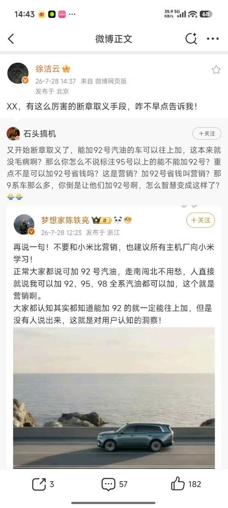

奶昔🥤
@realNyarime
小米公司自从上市过后，他在我的眼里就跟华为是一样恶臭的德行了，只能说他变了
你没有发现以前黄仁勋是雷军的粉丝是米粉，但是最后他们差距开始悬殊了起来，你看现在雷军的种种行为，不就是在复刻黄仁勋在中国的吃热干面，吃炸酱面，穿夹克什么的行为吗？
所以我觉得有一方面就是为了哄抬股价，另一方面就是想让投资人开心，包括小米在上市之前被投资人骂过多少次，雷军自己心里应该清楚

高坂穗奈雪
@RainEngine2024m
我操，你有这么好的微博，你怎么不早点告诉我
小米公关部总经理徐洁云用玄武语言回应了某知名博主对于小米营销的评价 https://t.co/mHkXh9aQJV